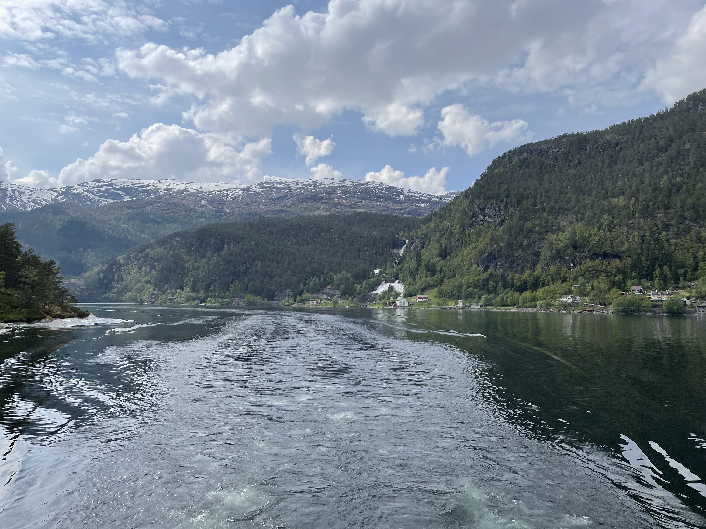

Visiting the Resilience Alliance in Norway
By Emily Rowen
June 13, 2024
“So you’re going to like a week of nerd camp?” - my husband
Yes, this particular gathering of researchers had a particular resemblance to summer camp, as we stayed in cabins, meals were shared around long tables, and we even took a field trip. As for the “nerd” part of my husband’s statement, we thought discussing all things resilience was fascinating.
Recently, I traveled to Bergen, Norway to attend a science meeting for the Resilience Alliance, an academic organization I have been involved with since the beginning of my master’s degree at the University of Nebraska - Lincoln. This small, international group of researchers has helped me engage more with resilience theory and practice and has given me a valuable support network outside of my home institution.
Research retreat as summer camp
The format of a science meeting is like a combination of a workshop and a conference. There are presentations about new work and ideas, but there is also a lot of time to discuss in smaller groups. One of my favorite ways we shared new ideas was through a session of speed talks, where researchers had three minutes to present their latest work. I participated in this session and it was a great way to share what I had been working on in the SPASES lab this past semester.
In addition to sharing ideas, another important goal of this meeting was to reconvene several working groups formed by the RAYS (Resilience Alliance Young Scholars). The working groups consist mostly of PhD students with professional mentors providing guidance along the way. My working group has been trying to synthesize resilience assessments from different sectors and industries. This working group has been a great opportunity to expand my connections and learn from graduate students who are further along in their degrees than I am. The RAYS working group was also a meaningful way to create stronger connections with peers that were closer to my academic stage, but who were thinking about resilience in ways that challenged my own understanding.
We broke up the days of sitting and listening to presentations with a field trip to the Heathland Centre halfway through the meeting. This was a wonderful opportunity to engage with the local landscape and learn more about the unique ecosystems of the heathlands. The field trip also solidified why meeting in-person is so important. The change of setting and the ability to have discussions over meals and walks seemed to inspire unique conversations that may not have happened otherwise.
Collaborative networks and early-career researchers
Academic communities, such as the Resilience Alliance, can provide meaningful experiences and support. However, through discussions with others about some of the challenges others have experienced as they search for their academic community, I’ve come to realize finding a space to belong is not always easy. Two words that came to mind as I reflected on what characterizes a healthy academic community were inclusivity and engagement. The following questions might help you consider if an academic community embodies these words.
- Are there means to become involved in smaller groups and to cultivate a smaller community of researchers? (I think this becomes increasingly important the larger the group)
- Are these groups based on research interest? Will they expose you to new ideas that are relevant to your work?
- Are they vertically integrated groups that include people at different stages/ expertise levels?
- If it is an international organization, does their membership include those from the global South or other traditionally underrepresented areas?
The smaller group setting will allow you to get to know researchers in more substantial ways and a variety of career stages, geographic contexts, and cultures will challenge you to think in new ways.
- Are there opportunities for collaboration or involvement outside of an annual gathering?
- If you do get involved with collaborations, are you just signing up to do more free work?
- Are there clear benefits to your involvement and does it further your work? Or is it just to support the work of the group lead?
- Will you develop a new skill that might be difficult to acquire otherwise? * Will you be able to publish a chunk of this work for yourself?
- Do you enjoy working with these people?
- Is it difficult to find opportunities to be involved?
- Are people open to conversation? Do they inquire about your work in addition to answering questions you pose to them?

Is this right for me?
These questions were inspired by the fact that it is difficult to make meaningful connections without investing time and energy into a community. These meaningful connections would be difficult to establish at a single gathering of the group. However, considering the nature of the energy you are investing is important as well to make sure it is aligned with your research goals and that you will reap some benefit from your investment.
I also want to acknowledge that some of these questions you can answer with a visit to the organization’s website, however, for some questions you will have to attend a gathering to understand if this is a good fit for you and your work. This can be difficult as you may have to spend your own funds on memberships or time on applying to travel grants. However, I hope that in the end these efforts are worth it because the support, inspiration, and opportunities a healthy academic community can provide are difficult to find elsewhere.